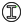

Grasshopper tools for computational design
A suite of advanced utilities and terrain analysis components designed to streamline computational workflows in Rhino and Grasshopper.
A suite of advanced utilities and terrain analysis components designed to streamline computational workflows in Rhino and Grasshopper.
Adapter for Archicad Slabs using Tapir workflow
View docs → MasterplanSTAGE 1 ADAPTER: THE LEGO BUILDER (METHOD 3) - VERBOSE DIAGNOSTICS & FIXED STACKING
View docs → MasterplanAdapter: The Sculptor (Method 1) - V2 (Rationalized)
View docs → MasterplanAudits pre-modeled 1-floor-high Breps. Extracts base contours and heights, heals small modeling gaps using a tolerance, and outputs the Universal Data Format for the MP Engine.
View docs → TerrainGenerates adaptive grading meshes, volumes, and crisp cut/fill colors.
View docs → UtilitiesConverts between Square Meters and Square Feet while maintaining Data Trees.
View docs → UtilitiesAssigns render materials to layers and auto-populates connected Value Lists.
View docs → TerrainGenerates a parametric grid, projects it to the terrain, and simulates downhill flow paths.
View docs → MasterplanStrictly sequences the podium first, then cascades that count to independent towers.
View docs → MasterplanSerializes referenced Rhino curves via Attribute User Text.
View docs → MasterplanSafely injects default BIM attributes into referenced Rhino curves.
View docs → UtilitiesConcatenates items in each branch into a single string.
View docs → UtilitiesSplit branches based on their size
View docs → Facade
CWProfileCreates a CWProfile polyline
View docs → FacadeCWT
View docs → FacadeBIM-ready Idempotent Engine. Consolidates Mega-Meshes per surface and binds them into Rhino Groups.
View docs → FacadeGenerates a detailed LOD 300 curtain wall system from base curves.
View docs → UtilitiesExplodes curves into Lines and Arcs, extracting Radii, Centers, and visual Dimensions.
View docs → TerrainCustom text/elevation labels with radial rotation and auto-sync.
View docs → MasterplanParses Facade JSON data into Curves, Heights, and Programs.
View docs → FacadeDynamically streams procedural facade modules with high-performance hot-reloading.
View docs → MasterplanContinuous balconies with 2D wall patterns and intelligent corners.
View docs → MasterplanDeep structural exoskeleton grid utilizing the robust Area-Offset Method.
View docs → Masterplan2D patterned balconies with merge logic, corner isolation, and fast math.
View docs → MasterplanGenerates solid horizontal spandrel bands, vision glass, and variable-depth mullions.
View docs → MasterplanGenerates patterned storefronts with intelligent canopies and structure.
View docs → MasterplanGenerates patterned vertical fins, spandrels, and vision glass.
View docs → MasterplanCompiles Grasshopper lists into a Fillet Rules JSON.
View docs → TerrainGenerates a flow accumulation heatmap by evaluating water paths against mesh vertices.
View docs → TerrainSimulates global terrain flooding based on a target water volume and generates a depth heatmap.
View docs → PatternGenerates a grid pattern (rectangular, hexagonal, triangular) within a boundary and trims cells to fit.
View docs → UtilitiesGroups a list of values by a corresponding list of keys
View docs → TerrainAnalyzes a mesh topography and provides a colored mesh displaying height distribution
View docs → MasterplanA high-performance topological coordinator. Evaluates spatial intersections, identifies setbacks/roofs, and broadcasts lightweight JSON architectures.
View docs → MasterplanExtracts all unique filter keys from any MP Engine JSON.
View docs → MasterplanZips strings and GH Colors into a JSON dictionary.
View docs → TerrainCreates a legend of colors with geometric representation
View docs → MasterplanParses Masses JSON
View docs → MasterplanGenerates Target and Palette JSONs from 3 parallel lists.
View docs → UtilitiesCalculates topological (Delaunay) or proximity-based clearances between tower outlines with dynamic categorization.
View docs → MasterplanReads a summarized JSON payload from the OOP Masterplan Engine and renders a responsive HUD.
View docs → TerrainAnalyzes mesh extremes, unrolls sections bi-directionally, and generates 3D/2D metadata labels.
View docs → UtilitiesHeals polylines by extending segments and creating boolean regions.
View docs → MasterplanParses railing curves from JSON.
View docs → UtilitiesRandomTreeSplit
View docs → MasterplanParametrically compiles lists of programs, heights, and floor counts into the standardized JSON array required by the Stage 1 Adapters.
View docs → TerrainAnalyzes road slopes by projecting 2D curves onto a terrain mesh
View docs → MasterplanParses roof data from JSON
View docs → MasterplanParses Slab JSON data.
View docs → TerrainAnalyzes a mesh topography and provides a colored mesh displaying the areas with slopes over the threshold
View docs → TerrainUltra-fast mesh slope analyzer using raw C# sequential array processing and safe UI automation.
View docs → PatternFinds a plane from a planar surface or brep face.
View docs → MasterplanConverts multiline tabular text into a Grasshopper DataTree.
View docs → TerrainGenerates topography with noise-masked procedural forest scattering and strict elevation limits.
View docs → UtilitiesExplodes and splits room boundaries at intersections, classifies edge topology, and generates unified floor slabs.
View docs → UtilitiesShuffles items from a pool into an existing tree structure
View docs → TerrainSimulates urban wind fields using terrain-parallel raycasting. Outputs a perfectly flat, crisp XY pixel-screen heatmap at a custom elevation.
View docs → UtilitiesGenerates high-fidelity 2D arrow outlines and meshes from input lines with custom mode logic.
View docs → PatternProjects a point vertically (along world Z-axis) onto a given plane.
View docs →Install directly within Rhino using the Package Manager.
Search for Enzyme-Grasshopper-Plugin and click Install.